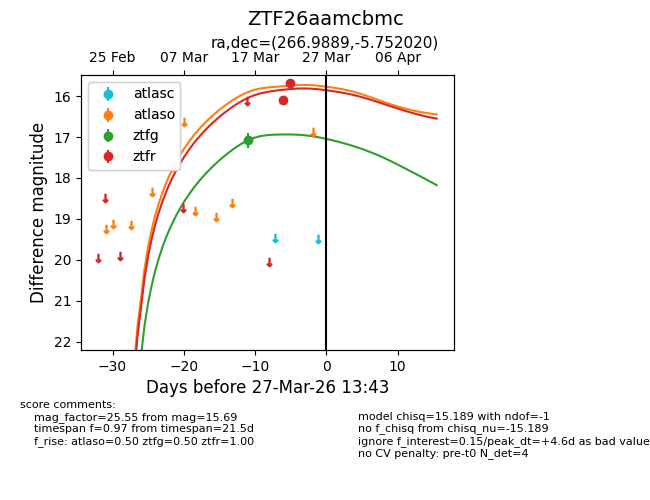
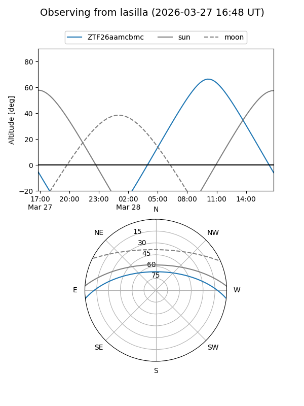
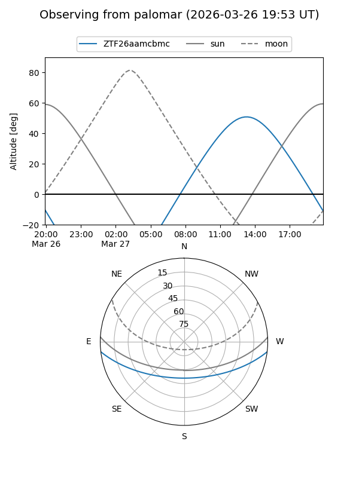
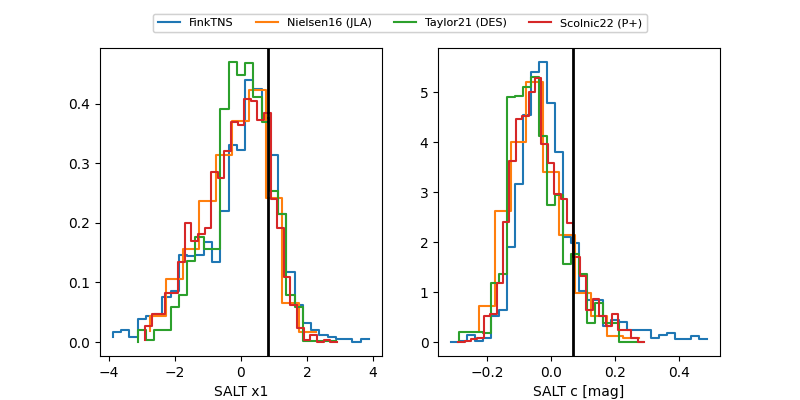

ZTF26aamcbmc
Target ZTF26aamcbmc at 2026-03-27 13:45
Aliases and brokers:
FINK: link
Lasair: link
ALeRCE: link
alt names
ZTF26aamcbmc (ztf,fink_ztf)
Coordinates:
equatorial (ra, dec) = 266.9889,-5.75202
equatorial (HMS+DMS) = 17:47:57.34,-05:45:07.27
galactic (l, b) = (20.3695,+11.32975)
Flags:
Photometry:
last atlaso=17.74, ztfg=17.08, ztfr=15.69
1 atlaso, 1 ztfg, 2 ztfr detections
Lightcurve

Visibility


Additional plots
